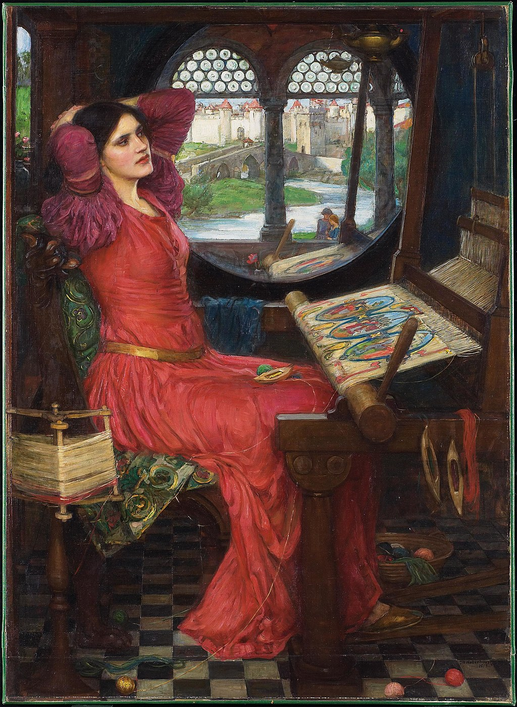

<head>
<meta charset="UTF-8" />
<meta name="keywords" content="drawing, painting" />
<meta name="description" content="drawings by Sunjy" />
<title>Sunjy</title>
<link rel="shortcut icon" type="image/x-icon" href="../../mImages/mCommon/favicon.ico" media="screen" />
<link rel="stylesheet" type="text/css" href="../../mCsses/mCommon/mCssA.css" />
<link rel="stylesheet" type="text/css" href="../../mCsses/mCommon/mCssB.css" />
<link rel="stylesheet" type="text/css" href="../../mCsses/mCommon/mCssC.css" />
<link rel="stylesheet" type="text/css" href="../../mCsses/mCommon/mCssD.css" />
<link rel="stylesheet" type="text/css" href="../../mCsses/mContent/mCssA.css" />
<link rel="stylesheet" type="text/css" href="../../mCsses/mContent/mCssB.css" />
<link rel="stylesheet" type="text/css" href="../../mCsses/mContent/mCssC.css" />
<link rel="stylesheet" type="text/css" href="../../mCsses/mContent/mCssD.css" />
</head>
<script type="text/javascript" src="../../mScripts/mContent/mContentAA.js" /></script>
<script type="text/javascript" src="../../mScripts/mContent/mContentAB.js" /></script>
<script type="text/javascript" src="../../mScripts/mContent/mContentAC.js" /></script>
<script type="text/javascript" src="../../mScripts/mContent/mContentAD.js" /></script>
<script type="text/javascript"></script> 
<script type="text/javascript">
document.write('<div class="mImgAbsolute"></div>');
/*
document.write('<p class="mFontSizeBColor" />From a white paper...</p>');
document.write('<table class="center"><tr><td>');
document.write('');
document.write('</td></tr></table>');
*/
</script>


<script type="text/javascript">
document.write('<p class="mFontSizeBColor" />I Am Half-Sick of Shadows, Said the Lady of Shalott</p>');
document.write('<p class="mFontSizeSColor" />“I Am Half-Sick of Shadows, Said the Lady of Shalott” by John William Waterhouse is the third painting by Waterhouse that depicts a scene from the Tennyson 1832 poem, “The Lady of Shalott.”<br><br>The scene shows the plight of a young woman from Arthurian legend, who yearned for the outside world but was isolated under a curse in a tower near King Arthur’s Camelot.<br><br>The lady wears a red dress, in a small dark room with Romanesque column windows. The Lady of Shalott was forbidden to look directly at the outside world.<br><br>She was doomed to view the world through a mirror and weave what she saw into a tapestry. In this painting, Waterhouse shows the large round mirror, through which the Lady views the world.<br><br>He also captures her yearning look as she sees a couple in the bottom right of the mirror.<br><br>The frame of the loom and the geometric tiles of the floor contrast with the vivid colors of nature outside.<br><br>The title of the painting is a quotation from the last two lines in the final verse of the second part of Tennyson’s poem:<br><br>“But in her web, she still delights<br>To weave the mirror’s magic sights,<br>For often thro’ the silent nights<br>A funeral, with plumes and lights<br>And music came from Camelot:<br>Or when the moon was overhead<br>Came two young lovers lately wed;<br>‘I am half sick of shadows,’ said<br>The Lady of Shalott.”<br><br>This painting depicts an earlier point in the tale than that represented by the previous two works by Waterhouse. In this painting, the mirror reveals a bridge over a river leading to the walls and towers of Camelot.<br><br>The scene is set shortly before an image of Lancelot appears in the mirror. Lancelot enticed the Lady out of her tower to her death.<br></p>');
document.write('<table class="center" /><tr><td>');
document.write('<br>The scene shows the plight of a young woman from Arthurian legend, who yearned for the outside world but was isolated under a curse in a tower near King Arthur’s Camelot.<br><br>The lady wears a red dress, in a small dark room with Romanesque column windows. The Lady of Shalott was forbidden to look directly at the outside world.<br><br>She was doomed to view the world through a mirror and weave what she saw into a tapestry. In this painting, Waterhouse shows the large round mirror, through which the Lady views the world.<br><br>He also captures her yearning look as she sees a couple in the bottom right of the mirror.<br><br>The frame of the loom and the geometric tiles of the floor contrast with the vivid colors of nature outside.<br><br>The title of the painting is a quotation from the last two lines in the final verse of the second part of Tennyson’s poem:<br><br>“But in her web, she still delights<br>To weave the mirror’s magic sights,<br>For often thro’ the silent nights<br>A funeral, with plumes and lights<br>And music came from Camelot:<br>Or when the moon was overhead<br>Came two young lovers lately wed;<br>‘I am half sick of shadows,’ said<br>The Lady of Shalott.”<br><br>This painting depicts an earlier point in the tale than that represented by the previous two works by Waterhouse. In this painting, the mirror reveals a bridge over a river leading to the walls and towers of Camelot.<br><br>The scene is set shortly before an image of Lancelot appears in the mirror. Lancelot enticed the Lady out of her tower to her death.<br>" />');
document.write('</td></tr></table>');
</script>


